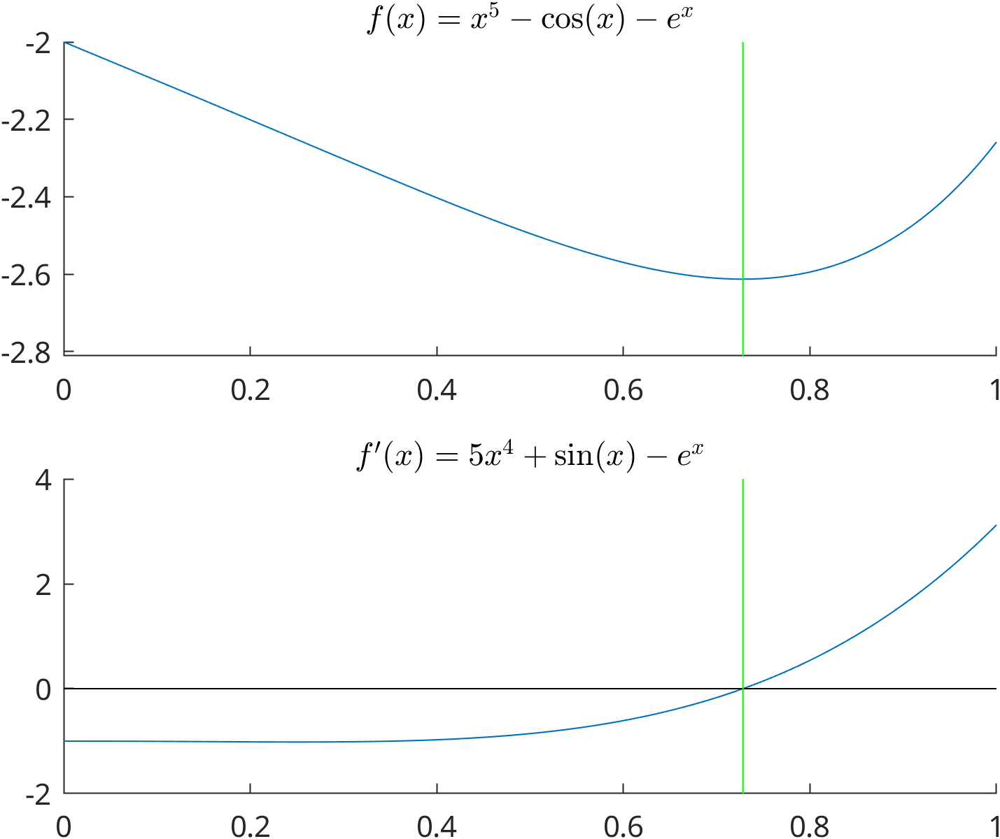

optim/concepts
April 20, 2026
1-variable functions
For a given f:[a,b]\to\mathbb{R} we search for a point \hat{x}\in(a,b) for which
f(\hat{x})\le f(x)
if |x-\hat{x}| is small enough. We say that f(\hat{x}) is a local minimum and \hat{x} is a local minimizer. We know from calculus that
f'(\hat{x})=0 at a local minimizer, assuming that is exists.
- that is why we need root finding methods
- usually we need a global minimum/maximum on some domain but it is harder to find them with the tools of calculus
- the wording: point of minimum/maximum also used
- local maximum/maximizer/point of maximum can be defined similarly
- here you find a short review about the notions

Find a local minimizer for
f(x)=x^5-\cos(x)-e^x on [0,1].
- by hand
- we quickly realize that solving the f'(x)=0 equation is not an easy task
- with the Newton method
- if f' is available then one can use the root finding methods
fzeroandfsolveon it. - a more convenient way is to use
fminbndfor one-variable functionsfminbnd(f,lo,hi)
fminuncfor one- or multi-variable smooth functionsfminunc(f,x0)wherex0is an initial guess
fminsearchfor one- or multi-variable non-smooth functionsfminsearc(f,x0)wherex0is an initial guess
- beware that only minimum finding methods are defined, in case of search for maximizer you have to pass -f to the methods.
Of all right angled triangle with a unit length hypotenuse (the longest side), find that whose area is the greatest.
Denote the length of the hypotenuse by 1 and by x one of the other sides. Applying the Pythagorean theorem we get \sqrt{1-x^2} for the third side, therefore the area of our triangle is
\begin{gather*} A(x)=0.5x\sqrt{1-x^2}\\ f(x)=4A(x)^2 = x^2 - x^4\\ f'(x) = 2x-4x^3 = 2x(1-2x^2) = 0\\ x=0, \pm \frac{1}{\sqrt{2}}\\ f''(x) = 2-12x^2\\ f''\left(\frac{1}{\sqrt{2}}\right)<0\ \ \text{maximizer} \end{gather*}
>> f=@(x) (-1)*(0.5*x.*sqrt(1-x.^2));
>> fminbnd(f, 0,1)
ans =
0.7071
>> 1/sqrt(2)
ans =
0.7071
>> fminunc(f,0.5)
Local minimum found.
Optimization completed because the size of the gradient is less than
the value of the optimality tolerance.
<stopping criteria details>
ans =
0.7071
>> fminsearch(f,0.5)
ans =
0.7071Of all rectangles with 16 unit perimeter, find that whose area is the greatest.
Denote the lengths of the sides by a,b. Then we have
\begin{gather*} (a+b)=8\ \ \ \ b=8-a\\ \text{area} = f(a) = a(8-a) \to \max\\ f'(a) = 8-2a = 0\\ a = 4\\ f''(a) = -2 \\ f''(4) < 0 \ \ \checkmark \end{gather*}
- it is actually a square.
- using the AM-GM inequality for positive numbers
ab\le \left( \frac{a+b}{2}\right)^2
- equality holds iff a=b
a(8-a)\le \left( \frac{8}{2}\right)^2
- the LHS is the area, the RHS is an upper bound for the area, but they are equal if a=8-a, that is when a=4.
Of all rectangles with 16 unit area, find that whose perimeter is the smallest.
Denote the lengths of the sides by a,b. Then we have
\begin{gather*} ab=16\ \ \ \ b=\frac{16}{a}\\ \text{perimeter} = f(a) = 2a + 2\frac{16}{a} \to \min\\ f'(a) = 2 - \frac{32}{a^2} = 0\\ a = \pm 4\\ f''(4) = -2 < 0 \ \ \checkmark \end{gather*}
- it is actually a square.
- using the AM-GM inequality for positive numbers
ab\le \left( \frac{a+b}{2}\right)^2
- equality holds iff a=b
\begin{gather*} 16=2\sqrt{2a\cdot \frac{32}{a}}\le 2a +\frac{32}{a}=\text{ perimeter} \end{gather*}
- the RHS is the perimeter, the LHS is a lower bound for the perimeter, but they are equal if 2a=\frac{32}{a}, that is when a=4.
For a given x_1,\ldots,x_n sequence of real numbers, find an A for which (x_1-A)^2+\ldots+(x_n-A)^2 \ \ \stackrel{A}{\to} \min
\begin{gather*} f(A) = (x_1-A)^2+\ldots+(x_n-A)^2\\ f'(A) = (-2)\left( (x_1-A)+\ldots+(x_n-A)\right)\\ f'(A) = 0\ \implies \ A=\frac{\sum x_k}{n}\\ f''(A) = 2n\\ f''(\frac{\sum x_k}{n}) > 0\ \ \checkmark \end{gather*}
- it is actually the mean
2-variable functions
assumptions
- f:D\to \mathbb{R} for some open D \subset \mathbb{R}^2
- f is differentiable on D
(local) extremizer and extremum
- neccessary condition: if (\hat{x},\hat{y}) is a local extremizer of f then
f_x'(\hat{x},\hat{y})=0\\
f_y'(\hat{x},\hat{y})=0\\
- the point (\hat{x},\hat{y}) for which f'(\hat{x},\hat{y})=0 is called stationary or critical point
- any extremizer is a stationary point
- not all stationary point is an extremizer
- the possible points for extremum are among the stationary points
- we need to find the solutions for a (usually non-linear) system of equations
- f(x,y)=x^2+y^2, f_x'(x,y)=2x and f_y'(x,y)=2y, therefore the only stationary point is (x,y)=(0,0), one can see that it is a local+global minimum.
- f(x,y)=x^2-y^2, f_x'(x,y)=2x and f_y'(x,y)=-2y, therefore the only stationary point is (x,y)=(0,0), which is not an extremizer. (why?)
- suppose that (\hat{x},\hat{y}) is a stationary point
- set D(x,y)=f_{xx}''(\hat{x},\hat{y})f_{yy}''(\hat{x},\hat{y})-f_{xy}''(\hat{x},\hat{y})^2
f_{xx}''(\hat{x},\hat{y})>0 \ \text{ and }\ D(\hat{x},\hat{y})>0 \ \implies \text{local minimum} \\ f_{xx}''(\hat{x},\hat{y})<0 \ \text{ and }\ D(\hat{x},\hat{y})>0 \ \implies \text{local maximum} \\ D(\hat{x},\hat{y})<0\ \ \implies \text{saddle point}\\
- If D(\hat{x},\hat{y})=0 then “further” examinations needed, the test is inconclusive.
- In practice we will use computer to identify extremal points.
- find the local extremizers for
f(x,y)=x^3 + y^3 -3x -3y
- solution by hand:
\begin{gather*} f_{x}'(x,y)=3x^2 -3\\ f_{y}'(x,y)=3y^2 -3\\ (x,y)=(\pm 1,\pm 1)\\ f_{xx}''(x,y)=6x\\ f_{yy}''(x,y)=6y\\ f_{xy}''(x,y)=f_{yx}''(x,y)=0\\ D(x,y)=36xy\\ ... \\ \end{gather*}
- plot the contour lines:
contour - plot the gradient field:
gradientandquiver - start an approximation from an initial guess (based on plots)
fminsearchandfminunc
- find the local extremizers for
f(x,y)=(x^2+y-11)^2+(x+y^2-7)^2
- it is the Himmelblau function see here
clc;clf;clear;
fig=figure(1);
hold on;
f_str = "$f(x)=x^5-\cos(x)-e^x$";
f = @(x) x.^5-cos(x)-exp(x);
df_str = "$f'(x)=5x^4+\sin(x)-e^x$";
df = @(x) 5*x.^4+sin(x)-exp(x);
ddf = @(x) 20*x.^3+cos(x)-exp(x);
xx = linspace(0,1);
[x0, dfx0] = fzero(df,0.5);
fx0 = f(x0);
subplot(2,1,1);
hold on;
plot(xx,f(xx))
plot([x0,x0],[fx0-0.2,f(0)],"g");
ylim([fx0-0.2,inf]);
title([f_str],"Interpreter","latex");
subplot(2,1,2);
hold on;
plot(xx,df(xx))
plot([0,1],[0,0],"k")
plot([x0,x0],[-2,4],"g");
title(df_str,"Interpreter","latex");
exportgraphics(fig, "egy.png", 'Resolution', 300);
hold off;